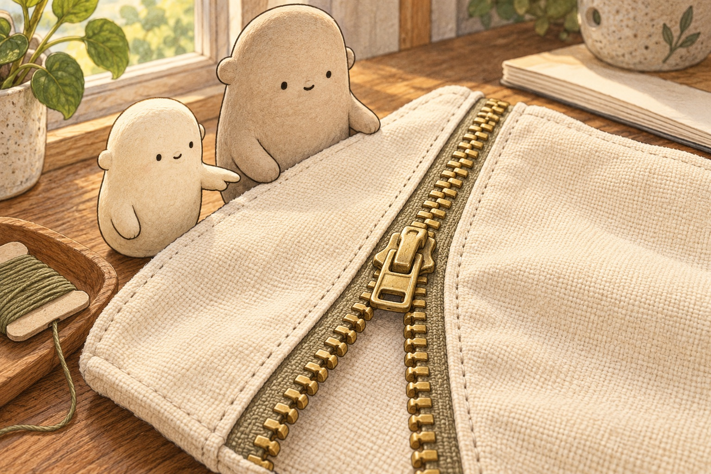
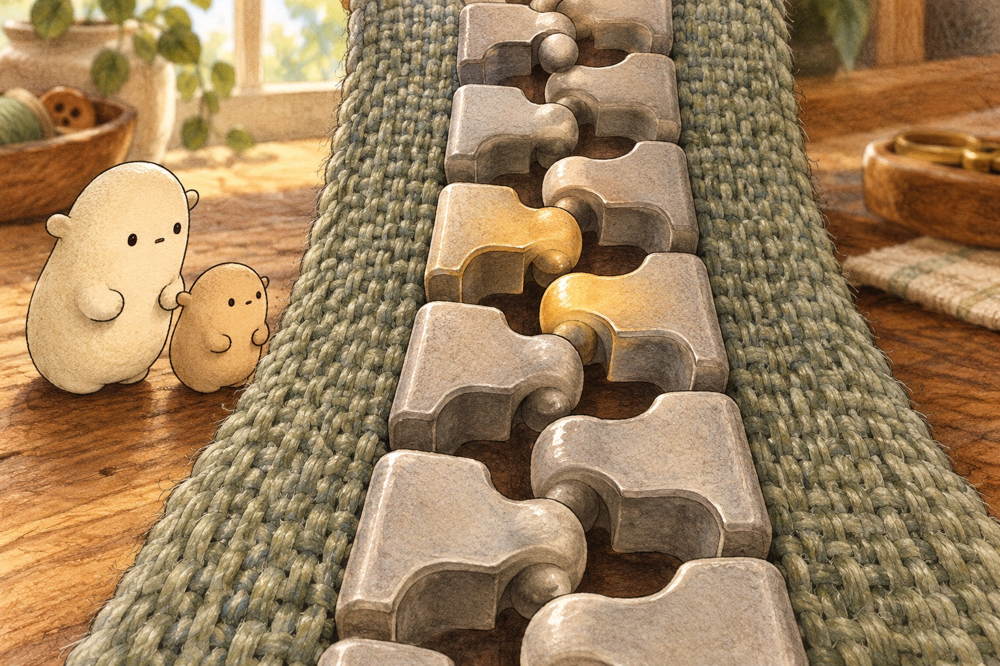
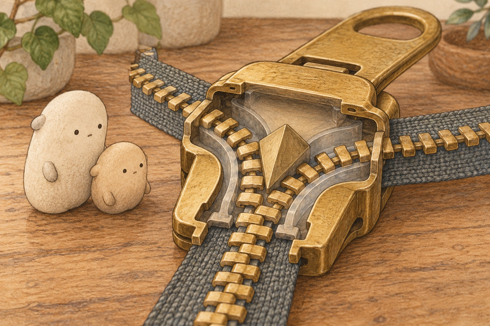

Follow the slider
A zipper clicks together.

Little Wonderer found the place where the pouch changed. Below the slider, two rows of zipper teeth stood apart. Above it, they made one joined row. The boundary moved whenever the slider moved. “So the slider must be doing something inside,” Little said.

Up close, each zipper tooth was really a shaped element. A rounded bump on one element fitted into a pocket on the other side. The elements alternated left, right, left, right. Interlock means to fit together so connected shapes hold one another in place.

The cutaway revealed a channel shaped like the letter Y. Two wide paths curved around a center wedge, then met at one narrow path. As the slider traveled upward, its angled walls nudged both tooth rows inward. The slider was a moving guide, not a row of teeth itself.
- element
- one shaped piece in a row of zipper teeth
- slider
- the moving piece that guides zipper elements together or apart
- channel
- a narrow path that guides something through
- interlock
- to fit together so connected shapes hold one another
- wedge
- a piece with sloping sides that guides things apart
- stop
- a small piece that keeps the slider from leaving the zipper
- tape
- the woven fabric strip that carries a row of zipper elements
- flexible
- able to bend without breaking